Python and PostgreSQL
A backend for a MeetUp-like web app
November 2026
Introduction
Demand is growing for developers who can use AI to convert a natural language request into valid SQL to query a database.
This tutorial is designed to help you build an “intelligent event assistant” for a web site similar to MeetUp.com. The ultimate goal is to allow end users to type a phrase like…
- “Find me a tech meetup next week that’s free.”
- “What events are happening near Jubilee metro station on Friday evening?”
- “Show me upcoming events about AI or databases.”
… and have the backend convert this into a query for a database, and respond with a useful answer.
It is written for someone who is comfortable with basic programming concepts and has used a database before, but has not yet built a web server.
A Four-Part Tutorial
This tutorial is in four parts:
- Create a basic proof-of-concept pipeline that works for limited input
- Add an AI layer that gets a Large Language Model to create custom queries for the database
- Build a robust framework around the AI pipeline, improve accuracy and security
- Add all the features that end-users will expect from such an app.
Toolchain
In building this first part of the project, you will be using the following tools:
The Stack
- Python 3: a scripting language to develop a server
- FastAPI: a framework for communicating between a browser and the server
- Uvicorn: a server to run the Python script and reload it after any changes
- PostgreSQL: a database to hold data about users, groups and meetings
- A database driver (psycopg2-binary) that lets Python talk to PostgreSQL
The Tooling
These are the optional tools that I use during development:
- Postman (for testing)
- Git (for collaboration and version control)
- Virtual Studio Code (for editing code)
Teaching Approach
I do not assume that you have used any of these technologies before. I include detailed explanations of each concept in collapsible sections. If you are a beginner, you can open these and learn precisely what is happening at each step. If you are more advanced, you can skip over these collapsed sections.
Some collapsible sections contain deliberately broken versions of the code, with a challenge to diagnose the problem before reading the explanation. These are optional; the mainline code always works.
I am working on MacOS, and this will be visible from the screenshots. If you are working on a different operating system (such as Windows) some of the Terminal commands will be different from those shown in the screenshots. Choose your operating system from the pop-up menu in the sidebar, and always check that the code snippets match this.
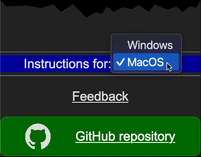
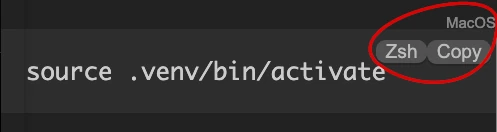
Steps
This is what you will do as you work through this first part of the tutorial:
- Create a barebones Python server responds with “Hello World!”
- Adapt the server to return an HTML file that says “Hello World!”
- Make the button in the HTML file that call the server; server responds with its local time
- Connect a Python script to PostgreSQL
- Add a table with dummy data to a Postgres database
- Insert dummy data (users, groups, meetings)
- Query the database from the HTML page to retrieve all meetings
- Create a script that simulates the response of an LLM and returns an SQL query
- Send a natural language question from the HTML page and retrieve the raw result
- Create a second script that simulates how an LLM could convert the raw result into a natural language answer
Setting up your Work Environment
You will need the following apps installed on your development computer in order to complete this tutorial. How you do this depends on your Operating System. Ensure that your operating system is selected in the sidebar on the left.
Code Editor
You will need a code editor to create python, html and other scripts. A popular choice is Virtual Studio Code, which is free. You can download Virtual Studio Code here.
PowerShell
This tutorial assumes that you will be using PowerShell in your Windows Terminal in VS Code.
Here are the steps to switch to PowerShell, if you have been using a different shell:
- Open the Command Palette with
Ctrl + Shift + P. - Start typing
Terminal: Select Default Profileand select it. - Choose
PowerShell(or"Windows PowerShell") from the list that appears.
Python
You can download Python from the official website.
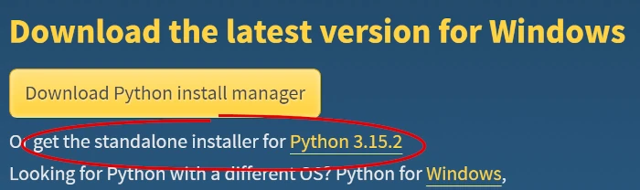
Choose the standalone installer, because this gives you the option of
checking the Add python.exe to PATH button before you click
Install Now.
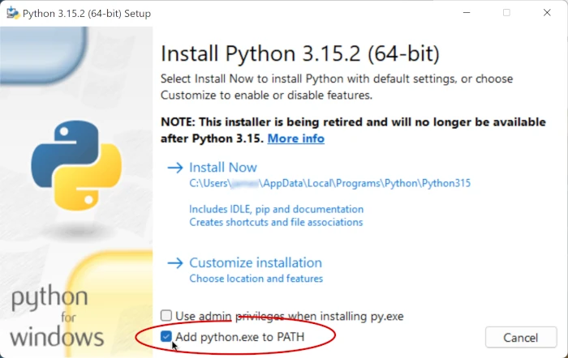
This is important, because it allows you to run Python from the command line.
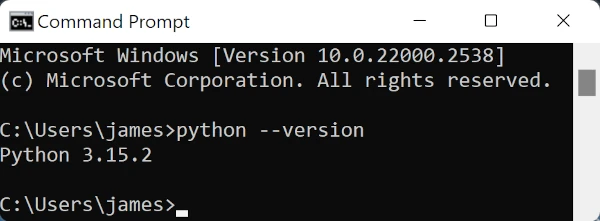
PostgreSQL
You can download PostgreSQL for Windows from the official website.
Python
You can download Python from the official website, or you can run:
brew install pythonAfter installation, you need to run a script to ensure Python 3 is recognized in your terminal:
- Navigate to the Applications folder.
- Find the Python 3.x folder.
- Right-click on Update Shell Profile.command and select “Open.” This will configure your terminal to recognize the python3 command.
To check that python3 is available on the command line,
run:
python3 --versionIf Python 3 is installed correctly, you should see the version number displayed.
PostgreSQL
To install PostgreSQL, and ensure that it is running, use the following commands:
brew install postgresql@16
brew services start postgresql@16Python
Python 3 is usually pre-installed. To make sure that you have the latest full version, run:
sudo apt update
sudo apt install -y python3-full
python3 --versionIf Python 3 is installed correctly, you should see the version number displayed.
You will also need pip for installing packages:
sudo apt install -y python3-pipOptional Tools
You might also like to install:
A Git repository containing the completed project is available here.A Basic Python Server
A key feature of this project is that it provides an API (Application Programming Interface) that allows a browser to communicate with a server, and through it, with a database.
You can think of an API like the waiters in a restaurant. When you enter the restaurant, all the tables are arranged in public in a standard way. The kitchen is often invisible. A customer will talk to a waiter who will take the message into the kitchen, and, a short while later, the customer will receive the specific food that they ordered.
In a news page in a browser, for example, articles and images will be arranged in a standard way, but depending on what links the visitor chooses, the specific data in the page will change.
FastAPI
FastAPI is like a restaurant infrastructure. It is a framework that provides all the features that you need create a robust API, along with possibility to customize these features to your specific needs.
Before you can open a new restaurant, you must have a building, with an electricity supply, a gas supply, plumbing, and all the equipment like stoves and fridges that the staff will need.
Before you can use FastAPI, you must have something similar. Fortunately, installing the structure for FastAPI is much faster than building a restaurant, and it is cost-free.
A Virtual Environment for FastAPI
Here’s how to get started, with an ultra-simple Python server. In a Terminal window, in the directory where you want to create your project, run the following commands:
mkdir event_assistant
cd event_assistant
python3 -m venv .venvThe line python3 -m venv .venv will create a directory
called .venv (for Virtual ENVironment) in your
event_assistant project directory.
The dot (.) as the first character of the name will make the
.venv folder invisible. This is the convention, but you can
ignore it. Even the name .venv is a convention: you could
call it “george”, and use “george” instead of .venv
everywhere, but your colleagues will not appreciate this.
Contents of .venv
./
└── .venv/
├── .gitignore
├── bin/
│ ├── activate
│ ├── activate.csh
│ ├── activate.fish
│ ├── Activate.ps1
│ ├── pip*
│ ├── pip3*
│ ├── pip3.15*
│ ├── python -> python3.15*
│ ├── python3 -> python3.15*
│ └── python3.15 -> /Library/Frameworks/Python.framework/Versions/3.15/bin/python3.15*
├── include/
├── lib/
│ └── python3.15/
└── pyvenv.cfgDiscovering the Global Environment
Currently, if you run the command…
which python3… the output will be something like:
/Library/Frameworks/Python.framework/Versions/3.15/bin/python3And if you run the command…
which python… the output is likely to be:
python not found(Get-Command python).Source… the output will be something like:
C:\Users\james\AppData\Local\Microsoft\WindowsApps\python.exeActivitating a Virtual Environment
The following command activates a virtual environment:
source .venv/bin/activateNow, if you run the command…
which python3… the output will be something like:
/Users/full/path/to/event_assistant/.venv/bin/python3And:
which python… will show something like:
/Users/full/path/to/event_assistant/.venv/bin/pythonPython3 or Python?
MacOS uses the name python3 for historical reasons. In
the past, python was reserved for version 2 of the app.
However, now that you have set up a virtual environment, where
python is provided as an alias for python3,
you can use plain python from now on.
.\.venv\Scripts\Activate.ps1Troubleshooting
If you see an error message like…
File C:\Users\james\Documents\event_assistant\.venv\Scripts\Activate.ps1 cannot be loaded because running scripts is disabled on this system.… don’t worry. PowerShell’s default execution policy blocks scripts
(including the Activate.ps1 file) from running to protect
you from malicious code.
To tell PowerShell that you know what you are doing, run this command once:
Set-ExecutionPolicy -Scope CurrentUser -ExecutionPolicy RemoteSignedThis allows locally created scripts (like the venv activation script) to run. Simply run the command…
.\.venv\Scripts\Activate.ps1… again after you run the Set-ExecutionPolicy...
command, and all should be good.
Now if you run the command …
(Get-Command python).Source… you should see something like:
C:\Users\full\path\to\event_assistant\.venv\Scripts\python.exeA Virtual Sandbox
Now that you have activated the virtual environment,
python and pip commands point to the copies
inside .venv, instead of the system-wide ones. This is
important, because different projects may require different versions of
the same custom package.
Installing FastAPI in the Virtual Environment
Your next step is to use pip, the Python package
manager, to install FastAPI locally. If you did not use a virtual
environment for all your projects, you would be forced to use the same
globally installed version in all your other projects, too.
Run the following command to install FastAPI with the standard extras that it needs to operate:
pip install "fastapi[standard]"$env:PYYAML_FORCE_LIBYAML="0"
pip install "fastapi[standard]"You should see a rush of text in the Terminal window as
pip downloads the files needed by FastAPI. These will be
stored in your .venv directory, in
.venv/lib/python3.15/site-packages/ to be precise. Some
command wrappers will be added to .venv/bin/ so that you
can call them directly from your Python scripts.
Updated contents of .venv
./
└── .venv/
├── .gitignore
├── bin/
│ ├── activate
│ ├── activate.csh
│ ├── activate.fish
│ ├── Activate.ps1
│ ├── agent-detector*
│ ├── detect-installer-test*
│ ├── dotenv*
│ ├── email_validator*
│ ├── fastapi*
│ ├── httpx*
│ ├── httpx2*
│ ├── idna*
│ ├── markdown-it*
│ ├── normalizer*
│ ├── pip*
│ ├── pip3*
│ ├── pip3.15*
│ ├── pygmentize*
│ ├── python -> python3.15*
│ ├── python3 -> python3.15*
│ ├── python3.15 -> /Library/Frameworks/Python.framework/Versions/3.15/bin/python3.15*
│ ├── typer*
│ ├── uvicorn*
│ ├── watchfiles*
│ └── websockets*
├── include/
├── lib/
│ └── python3.15/
│ └── site-packages/
│ └── PACKAGES INSTALLED BY pip GO HERE
└── pyvenv.cfgWith all this infrastructure in place, it’s time to cook a first simple meal.
A Simple Hello World Server
Below is the Python code for a FastAPI server that responds to requests for the root path with “Hello World!” (in Russian, to check how browsers will handle Unicode).
Create a file called main.py inside your
event_assistant project directory, and give it the
following script:
# Import FastAPI class from the fastapi package
from fastapi import FastAPI
# Create an instance of the FastAPI app
app = FastAPI()
# Define a GET route for the root URL ("/")
@app.get("/")
async def read_root() -> str:
# Return a plain text response
return "Здравствуй, мир!"Understanding the script
The line …
app = FastAPI()… creates an instance of the FastAPI class. This class contains,
amongst many other things, a routing table that allows you to connect a
route (like “/”) to a function (like
async def read_root()).
The line…
@app.get("/")… tells the FastAPI instance that the function on the next line…
async def read_root() -> str:
# Return a plain text response
return "Здравствуй, мир!"… should be added to the routing table. As a result, when a client
makes a request for the / route, the
read_root() function is called.
Synchronous and asynchronous code
When you call someone on the phone, they can answer you immediately. When you send someone an SMS, they might not see it immediately, and they might take some time before answering. While you are waiting for a reply, you can continue to do other things.
A phone call is synchronous. An SMS is asynchronous, or
async for short.
When your server receives a request for a particular route, it may be able to answer immediately, as it does in this case. But in other cases, it may have to send its own request to a database, and wait for the database to reply.
The lines …
from fastapi import FastAPI
app = FastAPI()
@app.get("/")… are synchronous. Python runs each line completely before moving on to the next.
The function…
async def read_root() -> str:
# Return a plain text response
return "Здравствуй, мир!"… is asynchronous. Python notes that this function must be run, but
it may wait for other background tasks to complete first. After
acknowledging the async function, Python can run the next
line of code immediately. In this case, however, there is no “next line
of code”, so all that happens is that Python runs the
read_root() function at its earliest convenience.
Launching your Server
To launch this simple server, run the command:
fastapi dev main.pyYou should see the following output (and more) in the Terminal:
⚡️ Starting FastAPI in development mode
🐍 Using import string: main:app
🌐 Server started at http://127.0.0.1:8000
Documentation at http://127.0.0.1:8000/docsViewing the Response in your browser
Command-click on the link to http://127.0.0.1:8000. Your favourite browser should open to show the server’s response to the request.
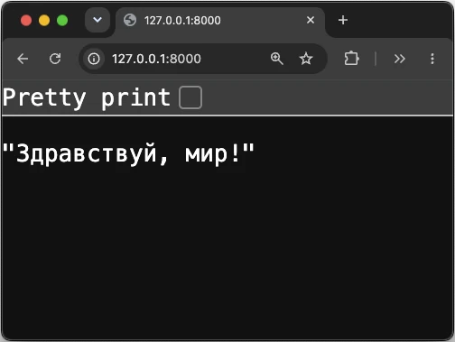
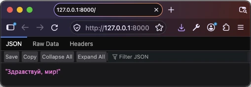
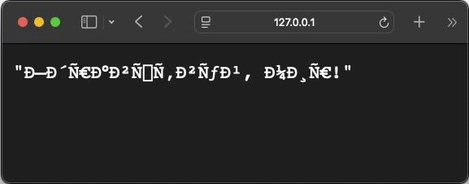
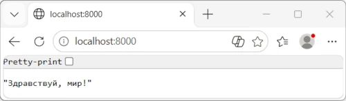
Why the Browsers Disagree
The response from the server is a short string of plain text. It is
not in HTML format. Chrome, Firefox and Edge guess (correctly) that the
string is in UTF-8 format. Safari makes a different guess:
that it is in Windows-1252.
Fixing the Issue Live
You could hide the problem, à la Potemkin
village, by replacing the Cyrillic text with Latin characters. That
would not be a solution, but it will show the power of FastAPI. Edit
your main.py file as follows:
# Import FastAPI class from the fastapi package
from fastapi import FastAPI
# Create an instance of the FastAPI app
app = FastAPI()
# Define a GET route for the root URL ("/")
@app.get("/")
async def read_root() -> str:
# Return a plain text response
return "Hello world!"Now, refresh your browser page. You should immediately see the text “Hello world!” appear in your browser.
Your change doesn’t fix the encoding problem. It sidesteps it, because ‘Hello world!’ is pure ASCII, and every browser agrees on ASCII. The Unicode problem is still there, waiting for the next non-Latin string.
What this does demonstrate is something useful. Remark that you did
not stop and restart the server. FastAPI did this for you as soon
automatically as it noticed a change to main.py. That saves
you time.
What happens if you include a pathname in the URL?
Try visiting [http://127.0.0.1:8000/foo]. What happens(http://127.0.0.1:8000/foo). What happens?
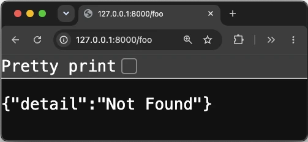
The line…
@app.get("/")… ensures that the following command…
async def read_root() -> str:
# Return a plain text response
return "Hello world!"… applies specifically to a request for the root URL
(/), and no other. For now, your server has no instructions
about what to do for any other request, so it responds with the JSON
string: '{ "detail": "Not Found" }'.
A major theme in this tutorial is how to handle many different requests, including unexpected ones. So a full solution for this issue is coming.
A note about __pycache__
You may notice that a directory named __pycache__/,
containing a file named main.cpython-315.pyc, appeared at
the root of your event_assistant project folder, after you
ran…
fastapi dev main.pyThe __pycache__ directory is where Python caches
compiled versions of your code to start faster next time. You
can safely ignore this folder. If you delete it, it will be
recreated automatically next time the server starts.
If you are using Git, you should make sure Git ignores it too, by
adding __pycache__ to your .gitignore
file.
What You’ve Just Learned
In this section, you have:
- Created a virtual environment for running your Python project
- Installed a number of dependencies, including
FastAPI, so that they are available for Python to use locally - Created a barebones server that proves that it is working by
responding with a string when the root path (
/) is requested - Noted that different browsers may treat the response differently
- Noted that requests for paths other than
/are treated as “Not Found” - Discovered that FastAPI will restart your server automatically after you make a change
- Discovered that it is important to try to break your project, so that you fix it before others start to use it.
In the next section, you’ll see how to make the server respond to a
request with an HTML page, complete with an entry for
<meta charset="UTF-8">, so that all browsers will
know how to treat the Unicode text.
Responding with HTML
FastAPI is designed first and foremost to handle API requests, where
a client asks the server to respond with dynamic data, in JSON format,
based on a specific query. It can also serve static files, like an
index.html page. And an index.html can make
the ideal client for testing the API.
In this section, you will be creating a simple
index.html page and a style sheet for it, and using your
existing server to deliver this.
The focus of this tutorial is on the API, so I will keep the frontend
index.html as simple as possible.
A Simple HTML file
- Create a folder called
public/at the root of yourevent_assistantproject folder. - Inside the
public/folder, create a file calledindex.html - Give it the following script:
<!DOCTYPE html>
<html lang="en">
<head>
<meta charset="UTF-8">
<meta
name="viewport"
content="width=device-width, initial-scale=1.0"
>
<link rel="stylesheet" href="assets/styles.css">
<title>Hello world!</title>
</head>
<body>
Здравствуй, мир!
</body>
</html>- Create a subfolder called
assets/inside thepublicfolder. - Inside the
assets/folder, create a file namedstyles.css. - Give it the following script:
body {
height: 100vh;
margin: 0;
display: flex;
flex-direction: column;
align-items: center;
color: #ddd;
background-color: #222;
}File Hierarchy
This is what your exent_assistant project folder should
look like now:
.
├── __pycache__
│ └── main.cpython-315.pyc
├── .venv/
├── main.py
└── public
├── assets
│ └── styles.css
└── index.htmlUpdating main.py
Each dish that you cook requires its own tools and utensils. A well-stocked kitchen cupboard will provide these for you.
When you add a new feature to a Python project, you often need to use
new tools. These can be stored in Python itself (as is the case for
pathlib below), or in one of the dependencies that you have
included. Here, you will be using fastapi.staticfiles to
define a directory from which your server can serve pre-built files,
like the index.html and styles.css files that
you have just made.
- Make the following changes to the
main.pyscript:
from fastapi import FastAPI
# Prepare to serve static files from a specific folder
from fastapi.staticfiles import StaticFiles
from pathlib import Path>
# Create an instance of the FastAPI app
app = FastAPI()
# Ensure that a request for "/" serves up "public/index.html"
app.mount("/", StaticFiles(directory=Path("public"), html=True))- If your server is not running, restart it with:
fastapi dev main.py(Normally, fastapi should have restarted it for
you.)
- In your browser, visit http://127.0.0.1:8000.
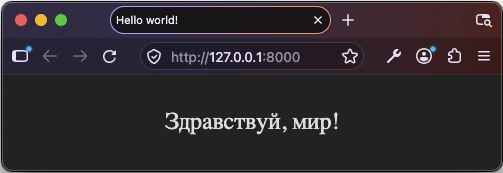
Setting the charset
Even in Safari, the Unicode text will be displayed correctly. This is
because the index.html file contains this tag:
<meta charset="UTF-8">This tells any browser that the text in the index.html
file is to be treated an UTF-8
What You’ve Just Learned
You have seen how to get your server to deliver an HTML page, and the
files that this HTML page needs to load, using
fastapi.staticfiles.
Now you are ready to modify index.html so that it sends
an API request to your server. This is what you will do in the next
section.
Making an API Request from a Client Page
In this section, you’ll make changes to both your new
index.html page and your main.py server
script, so that you can ask the server to tell you the time. You’ll
start by adding a button to index.html.
- Make the following changes to the
index.htmlfile, to add a button and way to show the response to a click on the button:
<!DOCTYPE html>
<html lang="en">
<head>
<meta charset="UTF-8">
<meta
name="viewport"
content="width=device-width, initial-scale=1.0"
>
<link rel="stylesheet" href="assets/styles.css">
<script defer src="assets/script.js"></script>
<title>API Request</title>
</head>
<body>
<h3>An API Request</h3>
<button
type="button"
id="get-time"
>
Get Server Time
</button>
<p id="time">
Click the button
</p>
</body>
</html>- Inside the
public/assets/folder, create a file calledscripts.js - Give it the following script:
const button = document.getElementById("get-time")
const time = document.getElementById("time")
const endpoint = "/get_time"
button.addEventListener("click", getTime)
function getTime(params) {
fetch(endpoint)
.then(response => console.log("response:", response))
}Notice that this script is read in by the index.html
page, in line 6:
<script defer src="assets/script.js"></script>The defer attribute means: wait until the browser has
created all the HTML elements before running the script. This ensures
that the Get Server Time button exists before the script tries to
manipulate it.
A click on the Get Server Time button will send a request for
/get-time in the server script… but the server script is
not yet ready to respond to this.
- Refresh your browser page.
- Click on the button.
- Open the Developer Tools of your browser at the Console tab.
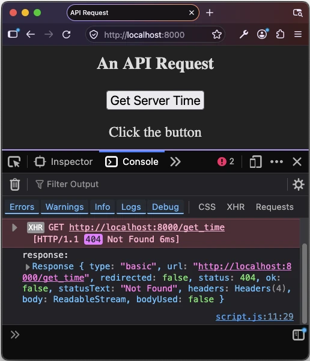
What’s (Not) Happening
In public/assets/script.js , the fetch
command…
fetch(endpoint)… tells the browser to make a request to the server for the endpoint
/get_time. This is an asynchronous process. It may take the
server some time to respond, so the line…
.then(response => console.log("response:", response))… waits for the response before it executes.
However, the server does not know how to respond, because you have
not yet told it what to do when it receives a request for anything other
than the root (/) path. As a result, the server responds
with a JSON string, including status: 404,
ok: false and statusText: "Not Found".
This is not what you want, but it is what your code asked for, and what is logged to your browser console.
Getting the Server to Respond to the Request
To get main.py to respond correctly to this new request,
you need to make some changes. In particular, you are going to need to
use a new tool — the datatime class — which is part of the
core of Python.
- Make the following changes to
main.py:
from fastapi import FastAPI
# Prepare to serve static files from a specific folder
from fastapi.staticfiles import StaticFiles
from pathlib import Path
# Import a function to handle time
from datetime import datetime
# Create an instance of the FastAPI app
app = FastAPI()
# Respond to a request for "/get_time" with the time on the server
@app.get("/get_time")
async def get_time():
return {"time": datetime.now().isoformat()}
# Ensure that a request for "/" serves up "public/index.html"
app.mount("/", StaticFiles(directory=Path("public"), html=True))FastAPI should restart the server for you automatically.
- Click on the Get Server Time button again, and observe how the response shown in the browser Console has changed.
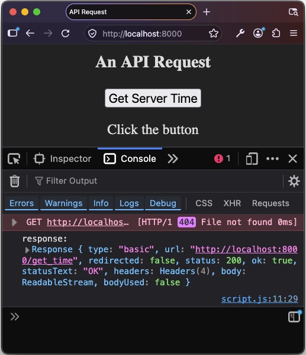
Understanding the Server’s Response
After the changes you made to main.py, the server
does know how to handle a request for /get_time.
As you can see status is now 200,
ok is true and statusText is
"OK". But where is the time?
You’ll notice that the response includes
body: ReadableStream.
When you make a request from a server, the response can be as short
as “ok”, or it may be live-streamed video, whose length cannot yet be
known. In both cases, the server will wrap its response in a
ReadableStream which the client can unpack, bit by bit, as
it becomes available.
In this case, the body contains the JSON string
{"time": <time string in isoformat>}, but this has to
be unwrapped before it can be used.
Treating the Response in the Client
Here’s how to extract the JSON object from the body of the response message.
- Make the following changes to the file at
public/assets/script.js:
const button = document.getElementById("get-time")
const watch = document.getElementById("watch")
const endpoint = "/get_time"
button.addEventListener("click", getTime)
function getTime(params) {
fetch(endpoint)
.then(response => response.json())
.then(displayServerTime)
}
function displayServerTime({ time }) {
watch.textContent = time
}- Click the Get Server Time button again and see the value that is displayed.
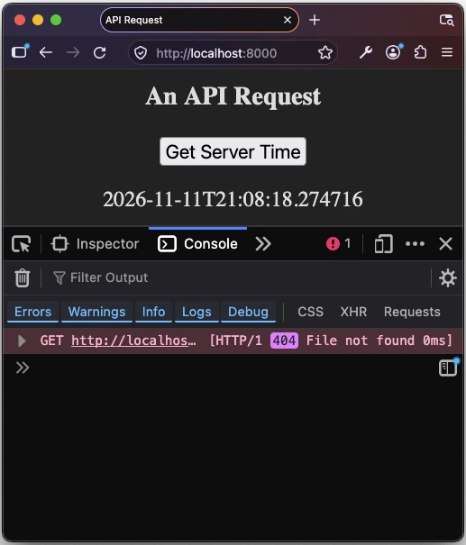
What You’ve Just Learned
In this section, you have:
- Edited your
index.htmlfile so that it displays a button and a field to show text. - Attached a script to the
index.htmlpage, to make the button active, and to display the result of its action. - Update
main.pyso that it responds to a request for a specific pathname. - Seen the importance of progressing step by step, checking at each stage the results of your changes.
You now have a server that can respond dynamically to a specific request.
In the next two sections, you will take a step to the side, to see how Python can connect to a PostgreSQL database, and how to add data to the database. After that, you will use your new knowledge to get your server to respond to a request for data from the database.
Connecting to a Database
Before connecting your main.py server to a database, you
can create a separate Python script to see how Python can connect to a
PostgreSQL database. Isolating a new issue clears the way to
understanding it better.
Ensure PostgreSQL is installed
In you should have installed PostgreSQL locally on your development computer. If you have not done that, please do it now, then return here.
Connecting to PostgreSQL
Python needs a driver to interact with PostgreSQL. The package you
need is psycopg2-binary. It will be installed as
psycopg.
- In a Terminal window open on your
event_assistantproject folder, run the command:
pip install psycopg2-binaryThis gets the Python package manager, pip, to download
the files needed for the psycopg2 driver for Python, and
store them at .venv\Lib\site-packages\.venv/lib/python3.15/site-packages/.
pip install error?
psycopg2-binary is a pre-compiled version of the driver
that does not require a C compiler or PostgreSQL development tools on
most common systems (standard Windows, macOS, and Linux).
However, binary packages are produced on a best-effort basis, and some platforms, such as Windows ARM64 (used by Parallels on Apple Silicon) or very new Python versions, may not have a wheel available yet.
If pip install psycopg2-binary fails with an error
mentioning pg_config or a missing compiler, this means that
your platform does not yet have a pre-built binary, and you will need
either to install the PostgreSQL development tools or to use the newer
psycopg driver instead.
- Use the command line to tell PostgreSQL to create a new database for you:
createdb events_db- At the root of your
event_assistantproject folder, create a new script calledconnect_db.py - Give it the following script:
import psycopg2
conn = psycopg2.connect(
dbname="events_db",
user="postgres",
password="<YOUR REGISTERED PASSWORD>",
host="localhost",
port="5432"
)
cur = conn.cursor()
cur.execute("SELECT 1")
print(cur.fetchone())
cur.close()
conn.close()Notice that postgres is the standard value for
user when testing on Windows. The password is the one that
you set when you installed PostgreSQL.
import psycopg2
conn = psycopg2.connect(
dbname="events_db",
user="<YOUR_USER_NAME>",
host="localhost",
port="5432"
)
cur = conn.cursor()
cur.execute("SELECT 1")
print(cur.fetchone())
cur.close()
conn.close()Replace "<YOUR_USER_NAME>" with your Mac user name
(in my case: “james”). Homebrew’s PostgreSQL uses your MacOS username
and no password for local connections. However, if you installed
PostgreSQL another way, you may need to provide a password.
- In a Terminal window open on your
event_assistantproject folder, run the command:
python connect_db.pyIf all goes well, you should see the following output in your Terminal:
(1,)What Just Happened?
This script simply proves that Python can connect to a PostgreSQL database, by performing the simplest possible sequence of actions.
Here’s a line-by-line description of what the code in
connect_db.py does.
import psycopg2Reads in the psycopg2 that you installed with
pip just now, and makes it available to the script.
conn = psycopg2.connect(
dbname="events_db",
user="<registered user name>",
host="localhost",
port="5432"
)Tells the psycopg2 to connect to the
events_db database that you have just created on the
PostgreSQL app running locally on your computer.
cur = conn.cursor()
cur.execute("SELECT 1")Tells this events_db database to perform a
SELECT operation with the number 1 that the
script provides. This is an operation that will run even if the database
contains no tables yet. If it succeeds, it proves that the connection to
events_db was successful.
print(cur.fetchone())This prints the result of the "SELECT 1" operation. The
result is a tuple with only one element: the number
1 that was to be SELECTed.
cur.close()
conn.close()This cleans up and closes down the connection, so the execution of the script is completed.
What You’ve Just Learned
In this section, you have verified that Python can connect to PostgreSQL, run a query, and read the result.
In the next section, you will create a table in the database and insert some data that you can later retrieve with a query.
Adding Data to a Table
Now that you have checked that your Python scripts can connect to your local PostgreSQL database, you are ready to add some data. To start with, you can add one simple table with a single row, and check that Python can read the data that it has added.
- At the root of your
event_assistantproject folder, create a new file calledadd_data.py - Give it the following script:
import psycopg2
# --- Connection settings ---
conn = psycopg2.connect(
dbname="events_db",
user="postgres",
password="<YOUR REGISTERED PASSWORD>",
host="localhost",
port="5432"
)
cur = conn.cursor()
# --- Create the table ---
cur.execute("""
CREATE TABLE IF NOT EXISTS meeting (
id SERIAL PRIMARY KEY,
title TEXT NOT NULL,
location TEXT NOT NULL,
start_time TIMESTAMP NOT NULL
)
""")
conn.commit()
print("Table 'meeting' is ready.")
# --- Ensure the table is empty before adding a row ---
cur.execute("TRUNCATE meeting RESTART IDENTITY;")
conn.commit()
# --- Insert one row ---
cur.execute(
"""
INSERT INTO meeting (title, location, start_time)
VALUES (%s, %s, %s)
RETURNING id
""",
('Python for AI', 'Maker Lab', '2026-11-20 19:00:00')
)
new_id = cur.fetchone()[0]
conn.commit()
print(f"Inserted meeting with id={new_id}.")
# --- Query all rows ---
cur.execute("SELECT id, title, location, start_time FROM meeting")
rows = cur.fetchall()
print("\nAll meetings:")
for row in rows:
print(row)
# --- Clean up ---
cur.close()
conn.close()import psycopg2
# --- Connection settings ---
conn = psycopg2.connect(
dbname="events_db",
user="<YOUR_USER_NAME>",
host="localhost",
port="5432"
)
cur = conn.cursor()
# --- Create the table ---
cur.execute("""
CREATE TABLE IF NOT EXISTS meeting (
id SERIAL PRIMARY KEY,
title TEXT NOT NULL,
location TEXT NOT NULL,
start_time TIMESTAMP NOT NULL
)
""")
conn.commit()
print("Table 'meeting' is ready.")
# --- Ensure the table is empty before adding a row ---
cur.execute("TRUNCATE meeting RESTART IDENTITY;")
conn.commit()
# --- Insert one row ---
cur.execute(
"""
INSERT INTO meeting (title, location, start_time)
VALUES (%s, %s, %s)
RETURNING id
""",
('Python for AI', 'Maker Lab', '2026-11-20 19:00:00')
)
new_id = cur.fetchone()[0]
conn.commit()
print(f"Inserted meeting with id={new_id}.")
# --- Query all rows ---
cur.execute("SELECT id, title, location, start_time FROM meeting")
rows = cur.fetchall()
print("\nAll meetings:")
for row in rows:
print(row)
# --- Clean up ---
cur.close()
conn.close()- In a Terminal window open on your
event_assistantproject folder, run the command:
python add_data.pyIf all goes well, each time you run the script, you should see the following output in your Terminal:
Table 'meeting' is ready.
Inserted meeting with id=1.
All meetings:
(1, 'Python for AI', 'Maker Lab', datetime.datetime(2026, 11, 20, 19, 0))Add multiple rows
Here’s a challenge: Can you edit the add_data.py script
so that you add multiple rows at once?
NOTE: The next section assumes that you have indeed inserted
3 or more rows into the events_db database, using one of
the solutions below, or your own solution.
Hints
Here are three possible solutions. Note that the code following the command…
cur.execute...… depend on what exactly was executed.
Solution 1
# --- Insert multiple rows ---
rows = [
('Python for AI', 'Maker Lab', '2026-11-20 19:00:00'),
('LLMs & SQL', 'City Library', '2026-11-21 18:30:00'),
('Database design', 'Café Olé', '2026-11-22 17:00:00')
]
cur.executemany("""
INSERT INTO meeting (title, location, start_time)
VALUES (%s, %s, %s)
""",
rows
)
conn.commit()
print(f"Inserted {cur.rowcount} meetings.")Solution 2
# --- Insert multiple rows ---
cur.execute("""
INSERT INTO meeting (title, location, start_time)
VALUES
('Python for AI', 'Maker Lab', '2026-11-20 19:00:00'),
('LLMs & SQL', 'City Library', '2026-11-21 18:30:00'),
('Database design', 'Café Olé', '2026-11-22 17:00:00')
""")
conn.commit()
print(f"Inserted {cur.rowcount} meetings.")Solution 3
# --- Insert multiple rows ---
cur.execute("""
INSERT INTO meeting (title, location, start_time)
VALUES
(%s, %s, %s),
(%s, %s, %s),
(%s, %s, %s)
RETURNING id
""",
(
"Python for AI", "Maker Lab", "2026-11-20 19:00:00",
"LLMs & SQL", "City Library", "2026-11-21 18:30:00",
"Database design", "Café Olé", "2026-11-22 17:00:00",
)
)
new_ids = [row[0] for row in cur.fetchall()]
conn.commit()
print(f"Inserted meetings with ids={new_ids}.")What You’ve Just Learned
In this section, you saw how to:
- Add a new table to you database, if it does not exist yet
- Empty the table, so that it contains no rows, and so that new
ids start at 1 - Insert a single row into the table
- Insert multiple rows into the table
- Create a query to read all rows in the table
Now that your events_db database contains some data, you
can modify the main.py server and the
index.html file that it serves up, so that you can display
data from the database in a browser client.
A Generic Connection
Did you notice that you used the same code in both of the last two scripts:
conn = psycopg2.connect(
dbname="events_db",
user="postgres",
password="<YOUR REGISTERED PASSWORD>",
host="localhost",
port="5432"
)conn = psycopg2.connect(
dbname="events_db",
user="<YOUR_USER_NAME>",
host="localhost",
port="5432"
)This means that, as you were creating the scripts, you had to think.
You had to replace <YOUR REGISTERED PASSWORD><YOUR_USER_NAME> with the
correct value for your system.
Here’s a way to simplify the process, and to ensure at the same time that your private data remains secret.
Creating a .env file
- At the root of your
event_assistantproject directory, create a file named.env - Give it the following text…
DB_NAME=events_db
DB_USER=postrgres
DB_password=<YOUR REGISTERED PASSWORD>
DB_HOST=localhost
DB_PORT=5432… except that instead of
<YOUR REGISTERED PASSWORD>, you write the actual
password that you set when you installed PostgreSQL.
DB_NAME=events_db
DB_USER=<YOUR_USER_NAME>
DB_PASSWORD=
DB_HOST=localhost
DB_PORT=5432… except that instead of <YOUR_USER_NAME>, you
write your actual Mac user name. Note that DB_PASSWORD is
given, but it is assigned no value.
A Hidden File
Because the name of the .env file starts with a dot
(.), your operating system will keep it hidden. When you
copy the contents of the folder, .env will not be
copied.
If you are using Git, you should ensure that your (hidden)
.gitignore file contains a line for .env. This
guarantees that Git will not push the .env file to a remote
repository, where others might find it.
Creating a config.py
Script
- At the root of your
event_assistantproject directory, create a file namedconfig.py - Give it the following text…
from pydantic_settings import BaseSettings, SettingsConfigDict
class Settings(BaseSettings):
db_name: str
db_user: str
db_password: str
db_host: str = "localhost"
db_port: int = 5432
model_config = SettingsConfigDict(env_file=".env")
settings = Settings()When you run this script, it will read in the data from your
.env file and create a dict called settings
which contains the data from .env. Note that it will set
values for db_host and db_port by default, so
even if these values are missing in your .env, they will be
present in settings.
Importing
settings from the config.py Script
Edit your connect_db.py and add_data.py
scripts as follows:
connect_db.py
import psycopg2
from config import settings
conn = psycopg2.connect(
dbname=settings.db_name,
user=settings.db_user,
password=settings.db_password,
host=settings.db_host,
port=settings.db_port
)
cur = conn.cursor()
cur.execute("SELECT 1")
print(cur.fetchone())
cur.close()
conn.close()add_data.py
import psycopg2
from config import settings
# --- Connect to database ---
conn = psycopg2.connect(
dbname=settings.db_name,
user=settings.db_user,
password=settings.db_password,
host=settings.db_host,
port=settings.db_port
)
cur = conn.cursor()
# --- Ensure that a "meetings" table exists
cur.execute(""" ... and so onOK. So this actually makes your scripts longer than the originals, but now they are generic. If you need to change the connection details for your project, you can change them in one place, and the changes will apply everywhere, and this works for both Windows and MacOS.
What You’ve Just Learned
Hard-coding data makes your code fragile, especially if the same data needs to be used in different places in your code. In most cases, it is good to apply the DRY principle: Don’t Repeat Yourself.
Creating the .env and config.py files means
that your project is more robust.
In the next section, you can use
from config import settings and the new arguments for
psycopg2.connect() call to avoid having to hard-code your
personal data again.
A Query from a Client
Now that the events_db database in PostgreSQL contains a
meetings table with some dummy data, you can update your
project so that you can retrieve this data from your browser, display
it.
Updating the Client
First, you need to edit index.html and
assets/script.js so that your web page makes a
POST request to your server.
You can remove the previous button that requested the server time, as this has now served its purpose.
public/index.html
<!DOCTYPE html>
<html lang="en">
<head>
<meta charset="UTF-8">
<meta
name="viewport"
content="width=device-width, initial-scale=1.0"
>
<link rel="stylesheet" href="assets/styles.css">
<script defer src="assets/script.js"></script>
<title>API Request</title>
</head>
<body>
<h3>API Request</h3>
<p id="query">SELECT * FROM meetings</p>
<button
type="button"
id="treat_query"
>
Treat Query
</button>
<pre id="result">
Click the button to get data from the database
</pre>
</body>
</html>public/assets/script.js
// Read data from the server
const queryP = document.getElementById("query")
const button = document.getElementById("treat_query")
const result = document.getElementById("result")
const endPoint = "/treat_query"
button.addEventListener("click", treatQuery)
function treatQuery() {
const query = queryP.textContent
const options = {
method: "POST",
headers: {
"Content-Type": "application/json"
},
body: JSON.stringify({ query })
}
fetch(endPoint, options)
.then(response => response.json())
.then(displayResults)
}
function displayResults(results) {
result.textContent = JSON.stringify(results, null, ' ')
}Updating the server
Here are the changes you should make to main.py. Note
that you are now importing settings from
config.py and using this to create the connection with the
database.
from fastapi import FastAPI
# Prepare to serve static files from a specific folder
from fastapi.staticfiles import StaticFiles
from pathlib import Path
# Prepare to read an incoming post message
from pydantic import BaseModel
# Prepare to connect to PostgreSQL
import psycopg2
from config import settings
# Create an instance of the FastAPI app
app = FastAPI()
# Respond to a request for "/treat_query" with data from the database
class QueryRequest(BaseModel):
query: str
@app.post("/treat_query")
async def treat_query(request: QueryRequest):
conn = psycopg2.connect(
dbname=settings.db_name,
user=settings.db_user,
password=settings.db_password,
host=settings.db_host,
port=settings.db_port
)
try:
cur = conn.cursor()
cur.execute(request.query) # !!! UNTRUSTED QUERY !!!
rows = cur.fetchall()
return [
{"id": r[0], "title": r[1], "location": r[2], "start_time": r[3].isoformat()}
for r in rows
]
finally:
cur.close()
conn.close()
# Ensure that a request for "/" serves up "public/index.html"
app.mount("/", StaticFiles(directory=Path("public"), html=True))
BaseModel from pydantic
pydantic is a validation library. Its BaseModel class
ensures that a given datum has the expected format.
In this case…
class QueryRequest(BaseModel):
query: str… ensures that the data parsed from the incoming request
ensures that the parsed data has a key named query whose
value is a string. This means that the line…
execute(request.query) # !!! UNTRUSTED QUERY !!!… will not fail due to the format of request.query.
However, it does not guarantee that this line will fail
because request.query is ill-formed or malicious SQL.
Because you explicitly designed the request.query to be
“SELECT * FROM meetings”, these last two issues are not a problem here.
For a production-ready server, you will need to deal with them.
Testing Your Code
- In your Terminal window, run
fastapi dev main.py- Ctrl-click or Cmd-click on the link to http://127.0.0.1:8000 which is logged to the console
- Click on the Treat Query button.
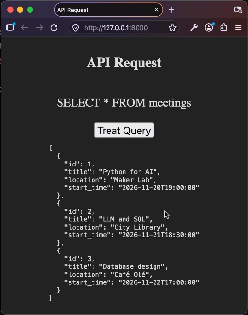
What You’ve Just Learned
In this section, you have seen how to send a pre-defined SQL query to the server, and have the server respond with raw data from the rows it requested from the database.
This is fine in a proof-of-concept, but it is not secure. In particular, the server should never trust data sent from a client.
In the next section, you will see how to send a natural language question instead of an SQL query. As you will see, this will simply displace the security problem; it will not solve it.
A Natural Prompt
In this section, you are going to cheat. You are going to pretend to call an LLM to convert a natural language question into SQL, but in fact, you will use a pre-defined look up table to return pre-defined SQL queries for pre-defined questions.
Why?
You will be building a working pipeline with all the necessary pieces. Later, you can modify the faked pieces to communicate with a real LLM, without altering the pipeline.
Sending Natural Language Questions from the Client
First, you can modify the public/index.html,
public/assets/script.js and
public/assets/styles.css so that your browser client can
send one of three pre-defined questions:
- find all meetings
- find ai meetings
- find meetings on friday
index.html
<!DOCTYPE html>
<html lang="en">
<head>
<meta charset="UTF-8">
<meta name="viewport" content="width=device-width, initial-scale=1.0">
<link rel="stylesheet" href="assets/styles.css">
<script defer src="assets/script.js"></script>
<title>Natural Language</title>
</head>
<body>
<h3>Natural Language Database Requests</h3>
<div id="buttons">
<button
type="button"
id="find-all"
data-question="find all meetings"
>
Find All Meetings
</button>
<button
type="button"
id="find-ai"
data-question="find ai meetings"
>
Find AI Meetings
</button>
<button
type="button"
id="find-friday"
data-question="find meetings on friday"
>
Find Friday Meetings
</button>
</div>
<p id="question"></p>
<pre id="json"></pre>
<pre id="result"></pre>
</body>
</html>script.js (all new)
// Read data from the server
const buttons = document.getElementById("buttons")
const questionP = document.getElementById("question")
const jsonP = document.getElementById("json")
const resultP = document.getElementById("result")
const endPoint = "/ask"
buttons.addEventListener("click", treatQuery)
function treatQuery({target}) {
const { question } = target.dataset
questionP.textContent = `Natural language question = "${question}"`
const options = {
method: "POST",
headers: {
"Content-Type": "application/json"
},
body: JSON.stringify({ question })
}
fetch(endPoint, options)
.then(response => response.json())
.then(displayResults)
}
function displayResults(results) {
jsonP.textContent = JSON.stringify(results, null, ' ')
resultP.textContent = results.answer
}styles.css
body {
height: 100vh;
margin: 0 auto;
display: flex;
flex-direction: column;
align-items: center;
color: #ddd;
background-color: #222;
max-width: 800px;
}
h3 {
text-decoration: underline;
}
pre {
white-space: pre-wrap;
}
#question {
margin: 0.25em;
}
#result {
font-family:'Segoe UI', Tahoma, Geneva, Verdana, sans-serif
}A Test Doomed To fail
You can restart your main.py server and then visit http://127.0.0.1:8000/ after making
these changes. However, if you click on any of the new buttons, the
server will not know how to respond:
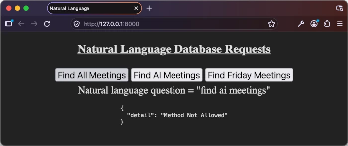
This is because the new client expects to find an endpoint like
post("/ask"), and the server currently only provides
get("/treat-query"). This mismatch is what generates the
{ detail: "Method Not Allowed" } response.
Adding a
fake_llm_in.py to Simulate a Call to an LLM
- At the root of your
event_assistantproject directory, create a new file calledfake_llm.py - Give it the following script.
fake_llm_in.py
"""
A placeholder for the LLM. It takes a natural-language
question and returns an SQL query. For now, the mapping is
hard-coded; later, this module will call a real LLM and the
rest of the system will not need to change.
"""
import asyncio
# Hard-coded mapping from question to SQL.
# Add entries as the tutorial introduces new questions.
RESPONSES = {
"find all meetings": "SELECT id, title, location, start_time FROM meetings",
"find ai meetings": (
"SELECT id, title, location, start_time FROM meetings "
"WHERE title ILIKE '%AI%' OR title ILIKE '%LLM%'"
),
"find meetings on friday": (
"SELECT id, title, location, start_time FROM meetings "
"WHERE EXTRACT(ISODOW FROM start_time) = 5"
),
}
async def question_to_sql(question: str) -> str:
"""
Convert a natural-language question into a SQL query.
This is async so that the rest of the system is already
shaped for the real LLM call, which will be async. The
current implementation is synchronous (a dictionary
lookup) wrapped in asyncio.sleep(0) to make the async
behaviour explicit.
"""
await asyncio.sleep(0) # simulate the await of a real network call
key = question.strip().lower()
if key in RESPONSES:
return RESPONSES[key]
# A predictable fallback, so the endpoint always returns something.
return "SELECT id, title, location, start_time FROM meetings"This script is fully commented, so that you can understand how it cheats. It does not call an LLM; it simply choose an SQL query from a pre-determined list, or returns a generic SQL query if the incoming question does not match anything in its look-up list.
Adapting
main.py to Use fake_llm_in.py
You now need to update main.py so that it: * Imports the
question_to_sql() function from fake_llm_in.py
* Responds to POST requests for "/ask" * Reads in the value
of question from the parsed data it receives from the
client * Makes an interim request to fake_llm_in.py to
retrieve an SQL query that matches the question * Run this fake AI SQL
instead of the { query } it used to receive
Here are the changes you can make:
main.py
from fastapi import FastAPI
from fastapi.staticfiles import StaticFiles
from pathlib import Path
import psycopg2
from pydantic import BaseModel
from config import settings
from fake_llm_in import question_to_sql
app = FastAPI()
class AskRequest(BaseModel):
question: str
@app.post("/ask")
async def ask(request: AskRequest):
# 1. Translate the question into SQL (placeholder for now).
sql = await question_to_sql(request.question)
print(f"[ask] sql: {sql}")
# 2. Execute the SQL. NOTE: SQL IS UNTRUSTWORTHY.
conn = psycopg2.connect(
dbname=settings.db_name,
user=settings.db_user,
password=settings.db_password,
host=settings.db_host,
port=settings.db_port
)
try:
cur = conn.cursor()
cur.execute(sql)
rows = cur.fetchall()
return [
{"id": r[0], "title": r[1], "location": r[2], "start_time": r[3].isoformat()}
for r in rows
]
finally:
cur.close()
conn.close()
app.mount("/", StaticFiles(directory=Path("public"), html=True))Displaying the Raw Output from the Database
Now, when you click on a button in the browser client, you see the same kind of response as you saw in .
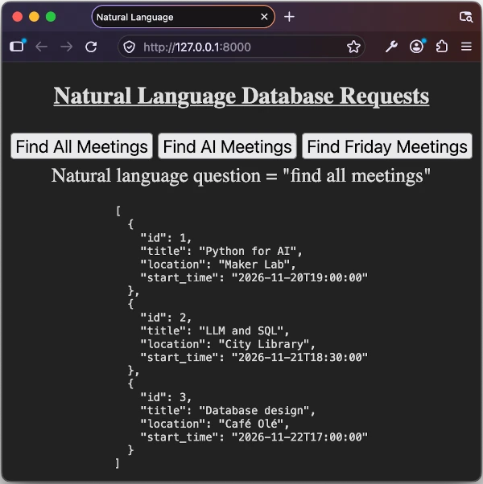
What You’ve Just Learned
In this section, you’ve seen how to:
- Send a natural language prompt like “find all meetings”, instead of crafted SQL query. This means that people with no experience of SQL will be able to use the system.
- Use a placeholder script to pretend to call an LLM to convert the natural prompt to SQL
- Return the raw result of the fake AI SQL
An everyday user may have difficulty in interpreting the meanin of the raw data that is returned. In the next section, you’ll add a second faked LLM request, to convert the raw data into a meaning natural language response.
A Natural Answer
To convert the raw output of the SQL query into a natural answer, you can use a template. The process is very similar to what you did in the last section, but here it acts in reverse:
Here’s a second script that fakes what an LLM’s response might be.
- At the root of your
event_assistantproject directory, create a file namedfake_llm_out.py - Give it the following script:
"""
fake_llm_out.py
A placeholder for the output side of the LLM. It takes the
original question and the rows returned by the database, and
produces a natural-language answer. For now, the sentences are
built from a template; later, this module will call a real LLM
and the rest of the system will not need to change.
"""
import asyncio
from datetime import datetime
def _relative_date(start: datetime, now: datetime) -> str:
"""Return a human phrase for the date, computed deterministically."""
days = (start.date() - now.date()).days
if days == 0:
return "today"
if days == 1:
return "tomorrow"
if days == 2:
return "the day after tomorrow"
if 0 < days < 7:
return f"this coming {start.strftime('%A')}"
return start.strftime("%A, %B %d")
def _format_time(start: datetime) -> str:
"""Return a 12-hour time like '7 p.m.' from a 24-hour timestamp."""
hour = start.hour % 12 or 12
suffix = "a.m." if start.hour < 12 else "p.m."
if start.minute:
return f"{hour}:{start.minute:02d} {suffix}"
return f"{hour} {suffix}"
async def rows_to_answer(question: str, rows: list[dict]) -> str:
"""
Convert a question and its result rows into a natural-language
answer.
This is async so that the real LLM call can replace the body
without changing the caller. The current implementation is a
deterministic template.
NOTE that `question` is not used here, but it will be sent as
part of the prompt to a real LLM, to help it formulate an
answer that best matches the original question.
"""
await asyncio.sleep(0) # simulate the await of a real network call
if not rows:
return "I could not find any meetings matching that request."
now = datetime.now()
sentences = []
for row in rows:
start = datetime.fromisoformat(row["start_time"])
sentences.append(
f'The meeting "{row["title"]}" will take place at '
f'{row["location"]} {_relative_date(start, now)} '
f'at {_format_time(start)}'
)
if len(sentences) == 1:
return sentences[0]
return "Here are the meetings I found:\n\n" + "\n".join(
f"- {s}" for s in sentences
)Updating
main.py to Use fake_llm_out.py
- Make the following changes to
main.py, so that it insertsfake_llm_out.pyinto the pipeline:
from fastapi import FastAPI
from fastapi.staticfiles import StaticFiles
from pathlib import Path
import psycopg2
from pydantic import BaseModel
from config import settings
from fake_llm_in import question_to_sql
from fake_llm_out import rows_to_answer
app = FastAPI()
class AskRequest(BaseModel):
question: str
@app.post("/ask")
async def ask(request: AskRequest):
# 1. Translate the question into SQL (placeholder for now).
sql = await question_to_sql(request.question)
print(f"[ask] sql: {sql}")
# 2. Execute the SQL. NOTE: SQL IS UNTRUSTWORTHY.
conn = psycopg2.connect(
dbname=settings.db_name,
user=settings.db_user,
password=settings.db_password,
host=settings.db_host,
port=settings.db_port
)
try:
cur = conn.cursor()
cur.execute(sql)
raw_rows = cur.fetchall()
rows = [
{"id": r[0], "title": r[1], "location": r[2],
"start_time": r[3].isoformat()}
for r in raw_rows
]
finally:
cur.close()
conn.close()
# 3. Convert the rows into a natural-language answer
# (placeholder for now).
answer = await rows_to_answer(request.question, rows)
print(f"[ask] answer: {answer}")
return {
"question": request.question,
"sql": sql,
"rows": rows,
"answer": answer,
}
app.mount("/", StaticFiles(directory=Path("public"), html=True))Testing Your Fake LLMs
Now, when you click on one of the buttons in your browser client, the server generates a comprehensive response which includes a natural language answer. The screenshot below shows natural answer as well as the entire response sent by the server. In a production app, there should be no need to show the entire response: just the natural answer should do.
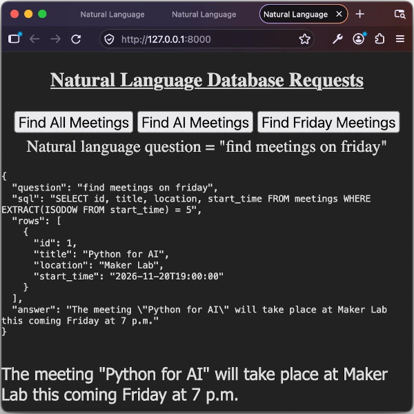
What You’ve Just Learned
In this section, you added a second LLM simulator into the pipeline, using principles that you have already seen. A question in natural language now receives a reply in natural language.
This proof-of-concept demonstrates the main steps needed to allow everyday users to get meaningful answers through an AI-assisted database.
Your next steps will be:
- To integrate a real LLM into the pipeline
- Handle the issues that arise when the LLM hallucinates or provides unsafe answers
- Expand the service provided to include all the features that end-user and meeting organizers will require.
Congratulations on finishing the first part of this four-part tutorial!